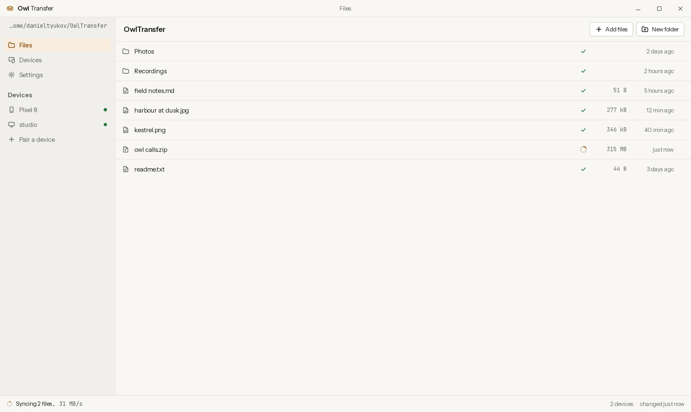
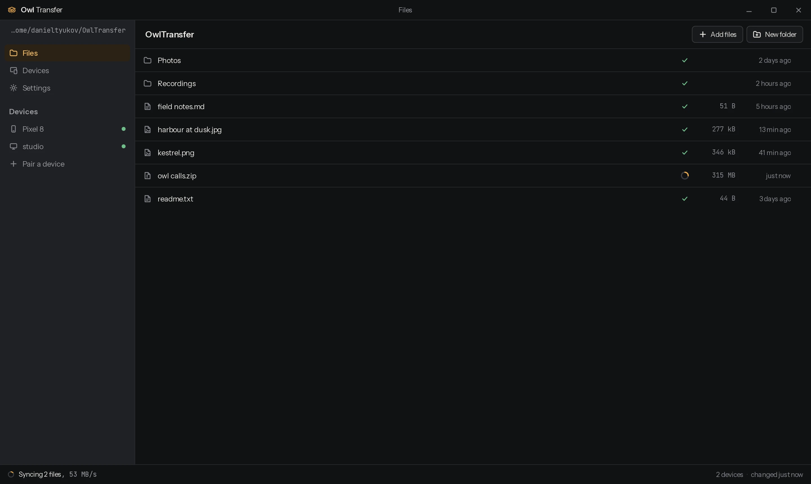
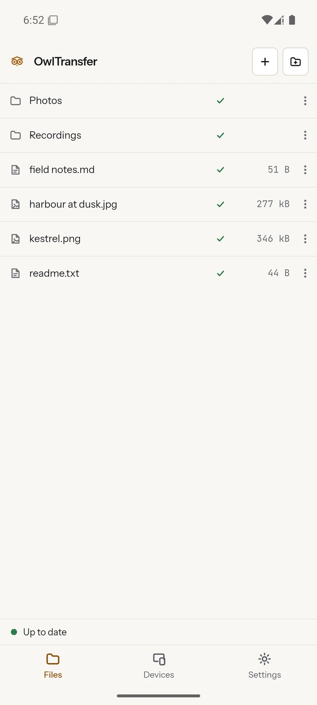
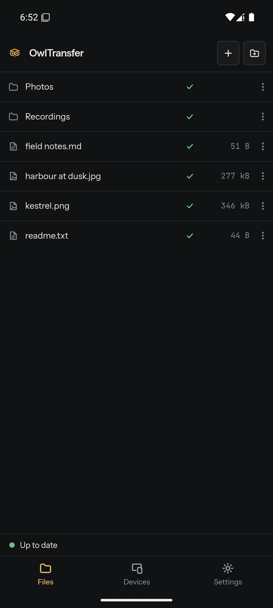

A folder that is the same on your computer and your phone. Drop a file in on one and it is on the other within a second, over your own Wi-Fi, with no account and no server.
Download for Android Download for Linux Download for Windows
The AppImage runs anywhere: chmod +x and go. A .deb for Debian
and Ubuntu and an .msi for anyone who deploys with one are on the
releases page.
The Linux builds are made on Ubuntu 22.04 so they run on older systems too. The Windows
installer is not code-signed, so SmartScreen asks once.




How it works
Two devices, one network, nothing in between
- Nothing leaves your network.
- The two devices find each other with a broadcast on your own Wi-Fi and then talk directly. Files never reach a relay, a cloud account or anyone's server, because there is no server anywhere in this. The app is the whole system.
- The connection is TLS 1.3, pinned on both ends.
- Each device generates its own certificate the first time it runs and keeps the private key. A paired device is a certificate fingerprint you have already approved, so a connection is accepted only from a device you paired with. Anything else is refused during the handshake, before it can send a byte.
- Both devices keep the whole folder.
- This is a copy on each device, not a window onto storage somewhere else. Open a file on the plane with the phone in flight mode. Changes made while the two were apart are exchanged the next time they see each other, and an edit on both sides keeps both, one renamed rather than thrown away.
Pairing
Six digits, once, with both devices in front of you
Open Devices on the phone, pick the computer from the list, and both screens show the same six-digit number. Check that they match and press Accept. That number is derived from the two certificates and a fresh random value, so a device in the middle cannot make two different handshakes show the same code.
After that the two remember each other and reconnect on their own whenever they are on the same network. Forget a device in Settings and its certificate stops being trusted, so the next connection from it is refused. If the network blocks broadcasts, or you are pairing against an emulator, type the other device's address instead: one side dialling is enough, and the connection carries the folder in both directions.
What it costs
Nothing, and there is nowhere for a bill to come from
There is no hosted service to pay for, no account to create, and no storage quota, because your files only ever sit on hardware you already own. The only third party involved is GitHub, which builds the releases and hosts the downloads above, and that is free and unmetered on a public repository.
It is MIT licensed and the source is public, so you can read what it does with your files and build it yourself. The architecture document describes the wire protocol, the merge rules and the threat model in full, for anyone who wants to audit it before trusting it with a folder.